不做单细胞，怎么让自己的Bulk数据也能分析细胞类群和免疫浸润？
原文：https://mp.weixin.qq.com/s?__biz=MzAwMzIzOTk5OQ==&mid=2247532107&idx=2&sn=7afc7517afb7dbdefeb7fd3312c1d5e8&chksm=9b3c071bac4b8e0da42d00342beec2e32d0e3b74c3f0bea7e3ea86d3622a1ffe6dd8987c9ce0#rd 合集：单细胞教程全收录
目前来说通过单细胞测序对于分析器官、组织内的异质性来说可谓是首选方法，但是动辄数万元/样的费用并不适合所有科研工作者。所以这篇推送教大家如何通过CIBERSORT[1]，使用Bulk RNA-Seq 的数据去反向预测、推断细胞类群的比例，利用这个原理我们同样可以推断免疫细胞的浸润程度（这在TCGA的数据挖掘中十分常见）。CIBERSORT主要是通过一种线性支持向量回归( linear support vector regression，SVR)的方法进行特征捕捉，从而起到去卷积 的作用。
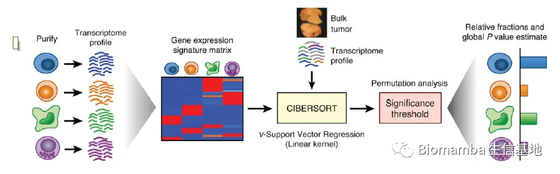
更多单细胞空转教程可见：这可能是全网最全的scRNA-seq分析教程！单细胞+空间转录组，Python全流程实战教学！ 如果需要单细胞数据分析教学 、生信热点全文复现 、自测数据个性化分析 辅导、常态化实验学习，欢迎联系客服微信[Biomamba_zhushou] 作为测试数据，作者设计并验证了一个白细胞基因特征矩阵，称为LM22 。它包含了区分22种人类造血细胞表型的547个基因 ，包括7种T细胞类型、naïve和记忆B细胞、浆细胞、NK细胞和骨髓亚群 。经流式细胞术的验证，CIBERSORT的预测与真实的情况大约有93%的一致性。
作为测试数据，作者设计并验证了一个白细胞基因特征矩阵，称为LM22 。它包含了区分22种人类造血细胞表型的547个基因 ，包括7种T细胞类型、naïve和记忆B细胞、浆细胞、NK细胞和骨髓亚群 。经流式细胞术的验证，CIBERSORT的预测与真实的情况大约有93%的一致性。
一、做一个最简单的CIBERSORT:
if(!require(CIBERSORT))devtools::install_github("Moonerss/CIBERSORT")## Loading required package: CIBERSORT## Welcome to 'CIBERSORT' package!## =======================================================================## You are using CIBERSORT version 0.1.0## =======================================================================
if(!require(pheatmap))devtools::install_github("pheatmap")## Loading required package: pheatmap
data(LM22)LM22[1:5,1:5]## B cells naive B cells memory Plasma cells T cells CD8 T cells CD4 naive## ABCB4 555.71345 10.74423 7.225819 4.31128 4.60586## ABCB9 15.60354 22.09479 653.392328 24.22372 35.67151## ACAP1 215.30595 321.62102 38.616872 1055.61338 1790.09717## ACHE 15.11795 16.64885 22.123737 13.42829 27.18773## ACP5 605.89738 1935.20148 1120.104684 306.31252 744.65660
data(mixed_expr)
mixed_expr[1:5,1:5]## TCGA-05-4244-01 TCGA-05-4249-01 TCGA-05-4250-01 TCGA-05-4382-01## A1BG 26.0302 120.1349 50.8597 145.9037## A1CF 0.0000 0.3220 0.0000 0.0000## A2BP1 1.7454 1.6098 0.0000 0.0000## A2LD1 135.5022 89.0629 151.1332 112.0685## A2ML1 0.3491 1.6098 0.0000 4.7861## TCGA-05-4384-01## A1BG 127.3671## A1CF 0.0000## A2BP1 0.0000## A2LD1 87.5748## A2ML1 0.0000
results <- cibersort(sig_matrix = LM22, mixture_file = mixed_expr)## Warning: package 'purrr' was built under R version 4.0.5## ## Attaching package: 'purrr'## The following object is masked from 'package:magrittr':##
## set_names
理解一下结果
你可以理解为返回了一个列名为细胞类型、行名为样本名的细胞浸润程度（占比）的矩阵
此外result中还会多出三列：
P-value: 用来展示去卷积的结果在所有细胞类群中是否具有差异
Correlation:参考矩阵与输入矩阵的特征基因相关性
RMSE: Root mean squared error，参考矩阵与输入矩阵的特征基因标准差
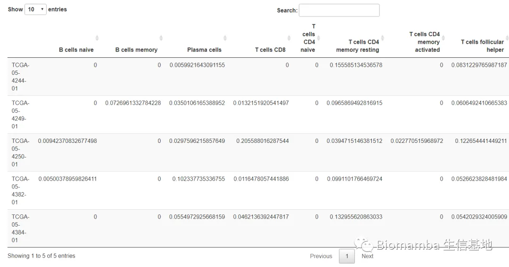
画个热图看一下
#按行（样本内部）标准化可以看出在各类样本内部，M2浸润程度（占比）最高
rowscale <- results[,1:ncol(LM22)]
rowscale <- rowscale[,apply(rowscale, 2, function(x){sum(x)>0})]#删除全是0的列
pheatmap(rowscale,scale = 'row')
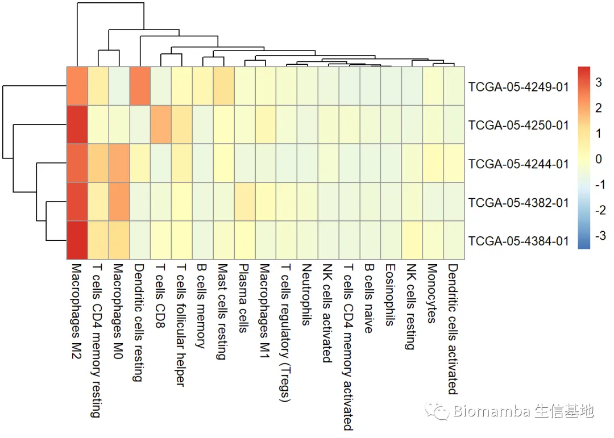
#各类样本之间也具有自己占比高的特异性免疫细胞
columnscale <- results[,1:ncol(LM22)]
columnscale <- columnscale[,apply(columnscale, 2, function(x){sum(x)>0})]#删除全是0的列
pheatmap(columnscale,scale = 'column')
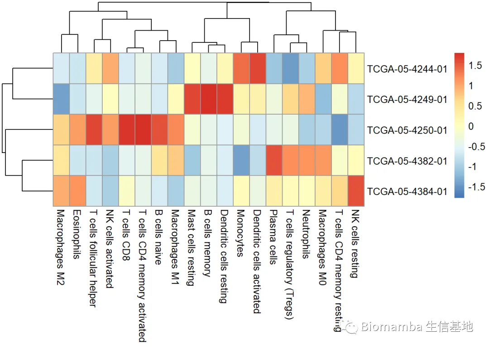
也许柱状堆积图更直观？
library(ggplot2)
## Warning: package 'ggplot2' was built under R version 4.0.5
my36colors <-c('#E5D2DD', '#53A85F', '#F1BB72', '#F3B1A0', '#D6E7A3', '#57C3F3', '#476D87','#E95C59', '#E59CC4', '#AB3282', '#23452F', '#BD956A', '#8C549C', '#585658','#9FA3A8', '#E0D4CA', '#5F3D69', '#C5DEBA', '#58A4C3', '#E4C755', '#F7F398','#AA9A59', '#E63863', '#E39A35', '#C1E6F3', '#6778AE', '#91D0BE', '#B53E2B', '#712820', '#DCC1DD', '#CCE0F5', '#CCC9E6', '#625D9E', '#68A180', '#3A6963','#968175')
cellnum <- results[,1:ncol(LM22)]cell.prop<- apply(cellnum, 1, function(x){x/sum(x)})data4plot <- data.frame()for (i in1:ncol(cell.prop)) { data4plot <- rbind( data4plot, cbind(cell.prop[,i],rownames(cell.prop), rep(colnames(cell.prop)[i],nrow(cell.prop) ) ) )}
colnames(data4plot)<-c('proportion','celltype','sample')
data4plot$proportion <- as.numeric(data4plot$proportion)
library(ggplot2)
ggplot(data4plot,aes(sample,proportion,fill=celltype))+geom_bar(stat="identity",position="fill")+scale_fill_manual(values=my36colors)+#自定义fill的颜色ggtitle("cell portation")+theme_bw()+theme(axis.ticks.length=unit(0.5,'cm'),axis.title.x=element_text(size=1))+guides(fill=guide_legend(title=NULL))
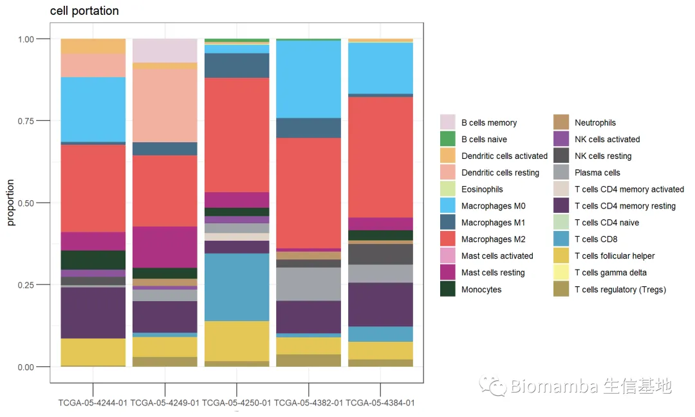
二、通过单细胞测序构建参考矩阵(sig_matrix)与需要预测的矩阵(mixed_expr)
以上是免疫细胞的浸润预测，如果我想做与自己的实质性器官相关的细胞类型预测呢？CIBERSORT具有网页版2，但是并没有给出sig_matrix的详细制作方法，问题不大，我们先来了解一下sig_matrix 与mixture_file的文件要求。
(1)sig_matrix
首先我们需要构建用户自己的“LM22”（参考数据），这一步我们需要通过一种过滤方法进行预处理，删除与细胞特征不相关的基因从而保留特征基因。LM22需要是归一化后的矩阵3，其要求与下面mixture_file的要求相一致
(2)mixture_file
这个文件的要求为：
a、以tab（制表符）为分隔符，不允许存在缺失值、不允许存在双引号。
b、行名为基因名，列名为样本名
c、输入的数据不能是取对数后的矩阵，如果表达矩阵中的最大值小于50，那么CIBERSORT会对表达矩阵通过2x方式去对数化。
d、数据的表达矩阵会通过“quantile normalization”的方式进行标准化。
e、如果输入的基因名中存在重复，那么CIBERSORT只会选取其中表达量最高者进行计算。
f、mixture_file需要包含至少50%的参考数据基因（LM22）
library(Seurat)
## Warning: package 'Seurat' was built under R version 4.0.5
## Registered S3 method overwritten by 'spatstat.geom':
## method from
## plot.imlist imager
## Attaching SeuratObject
scRNA <- readRDS('pbmcrenamed.rds')
DimPlot(scRNA,split.by = 'orig.ident')#可以看出我们有三组样本
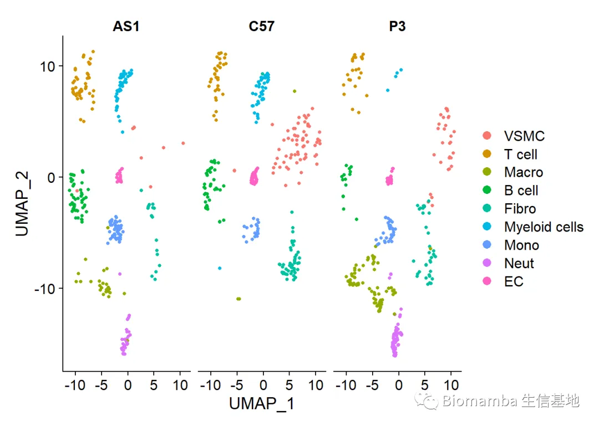
#先画一下各类细胞的比例
cellnum1 <-table(scRNA$orig.ident,scRNA$celltype)
group<-rownames(cellnum1)
celltype <- colnames(cellnum1)
cell.prop<-as.data.frame(prop.table(t(cellnum1)))
colnames(cell.prop)<-c("Celltype","sample","proportion")
data4plot1 <-as.data.frame(cell.prop)
p1<-ggplot(cell.prop,aes(sample,proportion,fill=Celltype))+
geom_bar(stat="identity",position="fill")+
scale_fill_manual(values=my36colors[1:20])+#自定义fill的颜色
ggtitle("cell portation")+
theme_bw()+
theme(axis.ticks.length=unit(0.5,'cm'))+
guides(fill=guide_legend(title=NULL))
#记住这张图
正式开始
allmarkerscRNA <- FindAllMarkers(scRNA)
## Calculating cluster VSMC## Calculating cluster T cell## Calculating cluster Macro## Calculating cluster B cell## Calculating cluster Fibro## Calculating cluster Myeloid cells## Calculating cluster Mono## Calculating cluster Neut## Calculating cluster EC
library(dplyr)## Warning: package 'dplyr' was built under R version 4.0.5## ## Attaching package: 'dplyr'## The following objects are masked from 'package:stats':## ## filter, lag## The following objects are masked from 'package:base':## ## intersect, setdiff, setequal, union
top10 <- allmarkerscRNA %>% group_by(cluster) %>% top_n(10, avg_log2FC)VlnPlot(scRNA,features = top10$gene,stack = T)
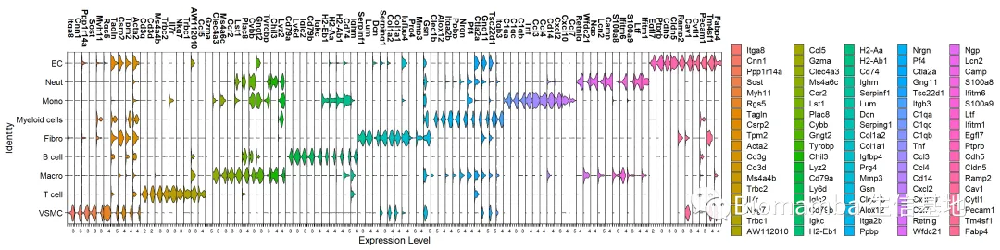
#看了一下top10的基因，分离度尚可，能够作为这些细胞的marker
#那就用这些基因作为sig_matrix吧,为了保持sig_matrix与mixed_expr的一致，你所得到的Bulk RNA-Seq的数据应该是TPM、FPKM的数据，那么对应单细胞里的表达量应该是
Idents(scRNA) <- 'celltype'
DimPlot(scRNA)
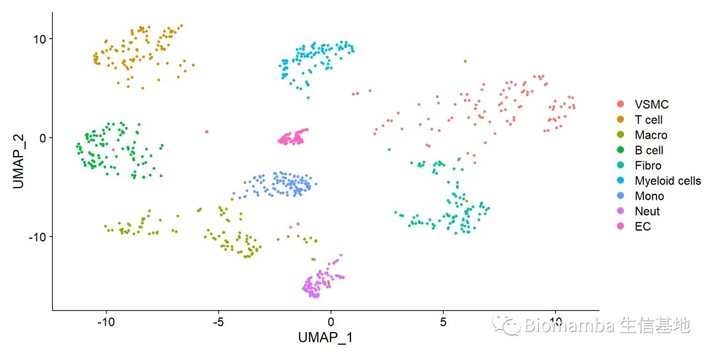
mysig_matrix <- AverageExpression(scRNA, slot = 'data' ,verbose = FALSE)$RNA
mysig_matrix[1:5,1:5]#已经按要求整理好了，行名是基因名，列名是细胞类型
## VSMC T cell Macro B cell Fibro
## Xkr4 0.02267521 0 0 0 0.008157272
## Gm19938 0.01302098 0 0 0 0.009772305
## Sox17 0.00000000 0 0 0 0.000000000
## Gm37587 0.00000000 0 0 0 0.000000000
## Gm37323 0.00000000 0 0 0 0.000000000
mysig_matrix <- mysig_matrix[top10$gene,]#取出marker gene的矩阵
#老规矩，我们还是打算用这个数据集本身就是最好的测试数据，我们来验证结果是否可靠
Idents(scRNA) <- 'orig.ident'#将单细胞数据的分类换成样本
DimPlot(scRNA)
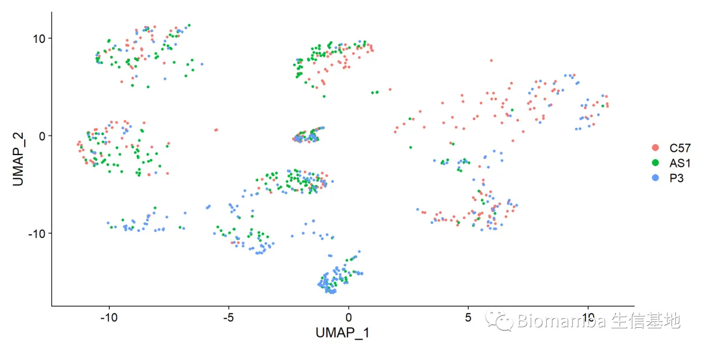
mymixed_expr <- AverageExpression(scRNA, slot = 'data' ,verbose = FALSE)$RNAmymixed_expr[1:5,1:3]#此时获得的是行名为基因，列名为样本的矩阵## C57 AS1 P3## Xkr4 0.007338256 0.002842255 0.000000000## Gm19938 0.004337453 0.000000000 0.003088998## Sox17 0.309160353 0.123368835 0.095429888## Gm37587 0.007844007 0.003721769 0.002002724## Gm37323 0.000000000 0.000000000 0.000000000
myresults <- cibersort(sig_matrix = mysig_matrix, mixture_file = mymixed_expr)### 再画一次堆积图
cellnum2 <- myresults[group,1:ncol(mysig_matrix)][,celltype]cell.prop<- apply(cellnum2, 1, function(x){x/sum(x)})
data4plot2 <- data.frame()
for (i in1:ncol(cell.prop)) { data4plot2 <- rbind( data4plot2, cbind(cell.prop[,i],rownames(cell.prop), rep(colnames(cell.prop)[i],nrow(cell.prop) ) ) )}
colnames(data4plot2)<-c('proportion','celltype','sample')
data4plot2$proportion <- as.numeric(data4plot2$proportion)
data4plot2$celltype <- factor(data4plot2$celltype,levels = levels(scRNA$celltype))
library(ggplot2)
p2<-ggplot(data4plot2,aes(sample,proportion,fill=celltype))+geom_bar(stat="identity",position="fill")+scale_fill_manual(values=my36colors)+#自定义fill的颜色ggtitle("cell portation")+theme_bw()+theme(axis.ticks.length=unit(0.5,'cm'),axis.title.x=element_text(size=1))+guides(fill=guide_legend(title=NULL))#肉眼可见，我们通过CIBERSORT预测出的细胞比例几乎与我们的单细胞对象比例一致
p1|p2
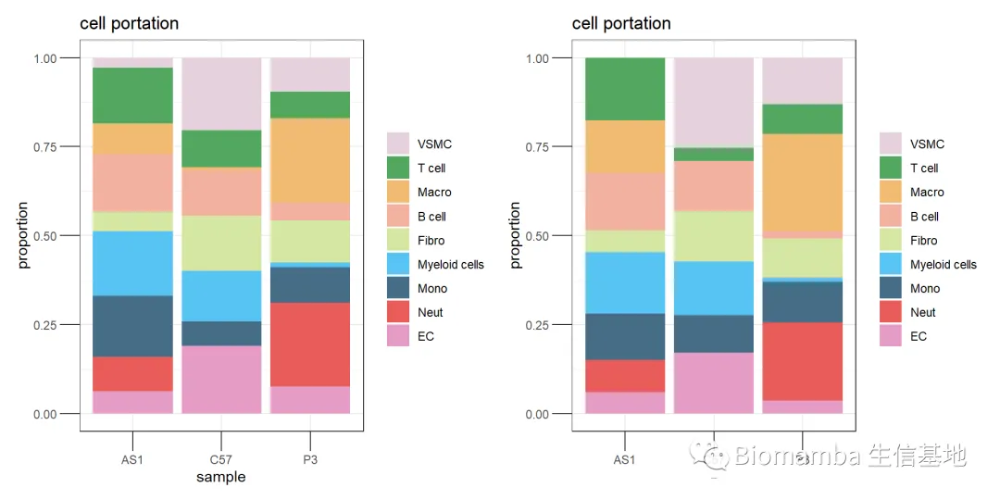
当然，你可能会说，肉眼估测的不算，那我们再来一个相关性分析：
library(ggplot2)
library(ggpubr)
## Warning: package 'ggpubr' was built under R version 4.0.5
data4lm <- as.data.frame(cbind(data4plot1$proportion,data4plot2$proportion))
#DT::datatable(data4lm)
colnames(data4lm)<- c('original','predict')
ggplot(data=data4lm, aes(x=as.numeric(original), y=as.numeric(predict)))+
geom_point(color="black")+
stat_smooth(method="lm",se=TRUE)+stat_cor(data=data4lm, method = "pearson")+
ggtitle(label ='linear model')+geom_rug()+
labs(x='original',
y= 'predict')
## `geom_smooth()` using formula 'y ~ x'
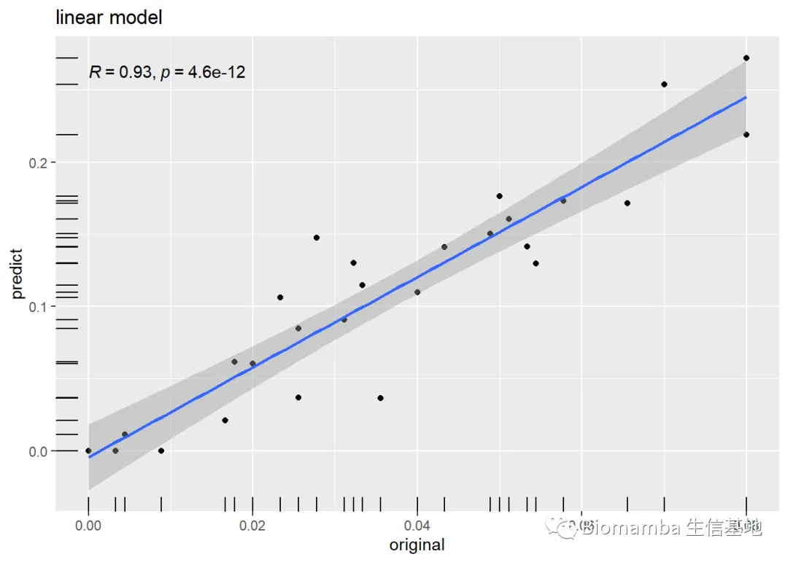
看看这相关性，说实话我都震惊了，真的跟作者说的一样，具有93%的一致性，所以大家可以放心的用起来。sig_matrix制作方法已经给大家演示过了，替换成自己想参考的单细胞数据即可，mixed_expr就用大家bulk RNA-Seq获得的TPM即可。
参考文献：
[1]: Newman AM, Liu CL, Green MR, Gentles AJ, Feng W, Xu Y, Hoang CD, Diehn M, Alizadeh AA. Robust enumeration of cell subsets from tissue expression profiles. Nat Methods. 2015 May;12(5):453-7. doi: 10.1038/nmeth.3337.

如何联系我们

 留一个领取资料、开箱即用的单细胞分析镜像的微信号[Biomamba_zhushou]，方便各位随时交流。同时我们也构建了交流群矩阵，欢迎大家入群讨论。
大家可以阅读完这几篇之后添加给生信入门初学者的小贴士
没有检索，就没有发言权
留一个领取资料、开箱即用的单细胞分析镜像的微信号[Biomamba_zhushou]，方便各位随时交流。同时我们也构建了交流群矩阵，欢迎大家入群讨论。
大家可以阅读完这几篇之后添加给生信入门初学者的小贴士
没有检索，就没有发言权
已有生信基地联系方式的同学无需重复添加

 您点的每个赞和在看，我都认真当成了喜欢
您点的每个赞和在看，我都认真当成了喜欢